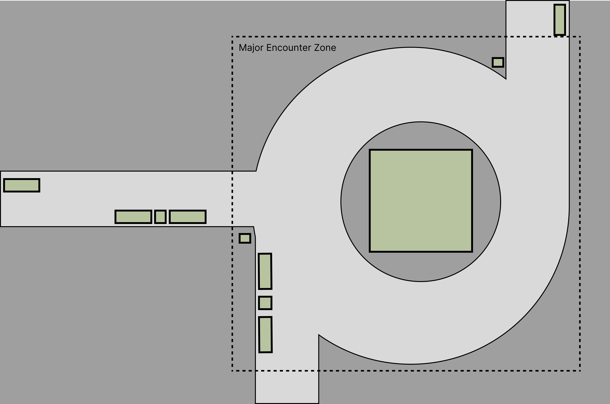

Architecting Social VR: Exploring Encounter and Serendipitous Interactions in Virtual Public Spaces
虚拟公共空间用户陌生偶遇行为研究
First release at Github and HCII 2024

VPS(Virtual Public Space) Research-EncounterBehaviors.
A small project that explored the potential of virtual reality (VR) as a tool for studying public space design and understanding user behavior within pre-designed virtual public spaces. Typically for its preliminary and experimental nature, this research focuses on encounter and serendipitous interactions.
Experiment Design
The experiment was designed to study social interactions in virtual public spaces, particularly focusing on "encounter" behavior akin to typical encounters in public parks. The Virtual Garden Party environment, modeled after a public park setting, served as the experimental space.
The Virtual Garden Party was constructed in a realistic style, drawing inspiration from real-life public park settings, which are typical public space types. The environment featured a major encounter zone (fountain roundabout), three guiding spaces (park pathways), several interactable objects (fountain, park benches), and soft-restricted zones (grass lawns). While the space offered a degree of openness, air walls were positioned at the boundaries to define the activity area.

Figure 1: Wireframe diagram of the Virtual Garden Party's interactive space, with dashed lines delineating the "Major Encounter Zone," green rectangles representing interactable objects in the environment, white indicating guiding spaces, and dark gray indicating soft-restricted zones.


Figure 2: Virtual Garden Party Scene.
Participants were spread into random area, instructed to spend 20 minutes in the Virtual Garden Party, engaging in natural social interactions without specific tasks or guidance. Prior to the experiment, they were informed that it was a virtual reality interaction party, and no specific task were granted other than attempting to interact with other participants. Participants can use the microphone to communicate with other participants directly, but the conversations are not one-on-one; instead, they can be heard by others in the environment, simulating public conversation.
Throughout the experiment, participants used realistic-style avatars provided by the researchers and were free to select their preferred avatar from the available options. The participants' avatars can interact with interactable objects in the scene but cannot interact with other avatars.
Data Collection
Experimenters closely observed participants' distribution and activities throughout the space, providing qualitative insights into their navigation and engagement patterns.
Following the experiment, participants underwent interviews to gather qualitative feedback on their experience, impressions of the space, and social interactions, with special attention given to note-worthy interactions.
Group interviews were conducted to collectively discuss these interactions. As part of the post-experiment assessment, participants completed the Social Interaction Anxiety Scale (SIAS) , providing additional insights into their levels of discomfort or anxiety related to social interactions within the virtual environment.
Ref.
- Wenli Jiang, & Chong Cao. 2021. Reconstruction: A Motion Driven Interactive Artwork Inspired by Chinese Shadow Puppet. In Proceedings of the 29th ACM International Conference on Multimedia (pp. 1441-1442).
- Carr, S.: Public space. Cambridge University Press (1992)
- Hillier, B., Hanson, J.: The social logic of space. Cambridge university press (1989)
- Gehl, J.: Life between buildings. Island Press (2011)
- Mehta, V.: Evaluating public space. J. Urban Des. 19(1), 53–88 (2014)
- Pan, X., Hamilton, A.F.D.C.: Why and how to use virtual reality to study human social interaction: the challenges of exploring a new research landscape. Br. J. Psychol. 109(3), 395–417 (2018)
- Brown, C., Efstratiou, C., Leontiadis, I., Quercia, D., Mascolo, C.: Tracking serendipitous interactions: how individual cultures shape the office. In: Proceedings of the 17th ACM Conference on Computer Supported Cooperative Work & Social Computing, pp. 1072–1081. Association for Computing Machinery, New York, NY, USA (2014)
- Carmona, M.: Principles for public space design, planning to do better. Urban Design Int. 24, 47–59 (2019)
- Mattick, R.P., Clarke, J.C.: Development and validation of measures of social phobia scrutiny fear and social interaction anxiety. Behav. Res. Ther. 36(4), 455–470 (1998)